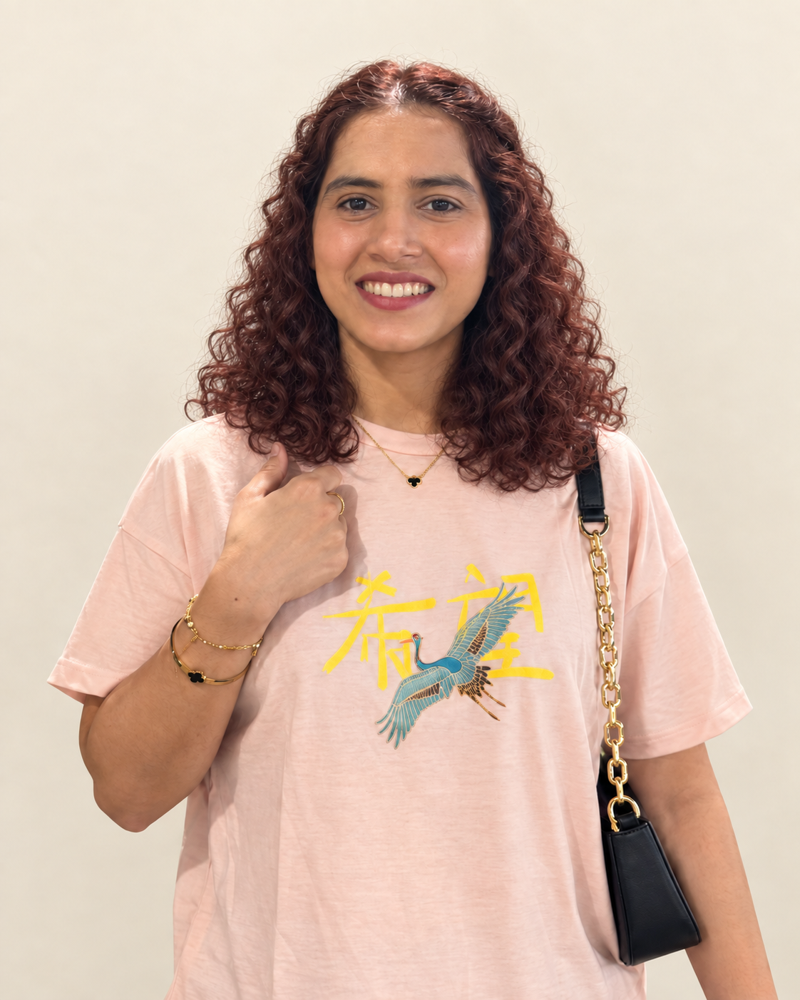

A website that feels like your business.
WordPress business websites, portfolios, and landing pages. I can customize your theme, redesign an existing site, and fix responsive layouts so your content works across screen sizes.
I’m Nasreen Arif. I help businesses turn their ideas into responsive WordPress websites and custom web applications.
WordPress · PHP · HTML & CSS · JavaScript · Node.js · React · Angular · AngularJS
Discuss your project ↗Explore my services<website> clear design responsive layouts purposeful interactions maintainable code </website>
WordPress business websites, portfolios, and landing pages. I can customize your theme, redesign an existing site, and fix responsive layouts so your content works across screen sizes.
Responsive websites and interactive interfaces using HTML, CSS, JavaScript, React, and Angular. Services include layout fixes, custom components, and updates to existing AngularJS applications.
PHP bug fixes, custom Node.js and Express features, REST API integration, and database-backed functionality. I help troubleshoot existing applications and develop features around your requirements.
Based in Norfolk, Virginia.

I’m a software engineer and computer science lecturer at Old Dominion University. My experience includes senior and principal engineering roles, alongside teaching systems, web technologies, cybersecurity, cryptography, and computer science theory.
For your project, I bring a practical approach: understand your goals, explain the technical options, and build a website or application that is straightforward to use and maintain.
Senior Software Engineer and Principal Software Engineer. Professional experience supported by a broad toolkit across application development, databases, and APIs.
Software Engineer roles at Generic Solution & Consultancy and TPS, building the foundation of my engineering career.
Lecturer at Old Dominion University, teaching across systems, web technologies, cybersecurity, cryptography, and theoretical computer science. Teaching strengthens the same skills I bring to client projects: breaking down complex problems, explaining technical choices clearly, and approaching development with care and precision.
We discuss your audience, content, must-have features, and what success looks like.
We agree on the scope, develop the website, and review the details together.
We check the agreed features and prepare the site for launch, with guidance for managing your content.
Tell me about your business, the pages or features you need, and your ideal timeline. We can start with a conversation about the right approach.